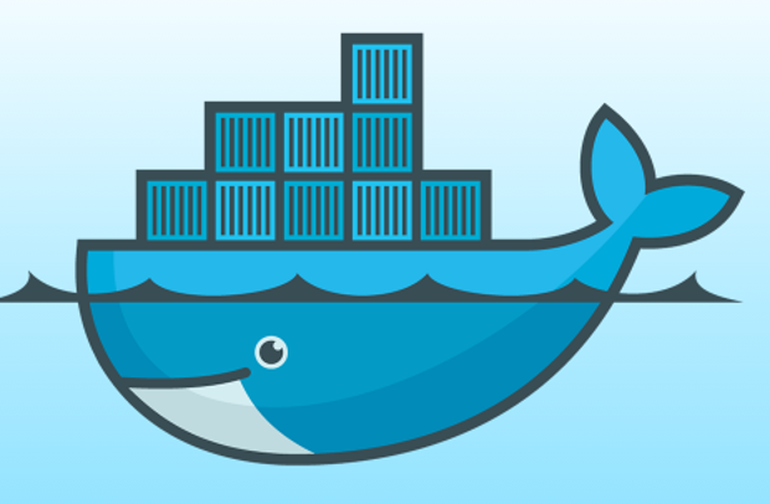

Introduction à Docker
Build, Ship and Run Any App, Anywhere *

*Where "anywhere" means an x86 server running a modern Linux kernel (3.2+ generally or 2.6.32+ for RHEL 6.5+, Fedora, & related)
## réferences:
* [docker-intro par pointful](http://pointful.github.io/docker-intro)
* [Introduction à Docker par Sébastien Douche](http://douche.name/presentation-docker/#1)
* [Docker Présentation sur le blog d'Ippon](http://blog.ippon.fr/2014/04/14/docker-presentation-part-1/)
* [ZDnet: What is Docker and why is it so darn popular?](http://www.zdnet.com/article/what-is-docker-and-why-is-it-so-darn-popular/)
## Pourquoi j'ai regardé Docker?
* Ca fait le buzz
* Ca semble simplifier le deployement
* Ca semble faire beacoup plus
* J'ai eu besoin de tester des "outils"
* ... J'ai aussi testé Docker :)
C'est quoi Docker?
C'est une application.
docker@boot2docker:~$ docker --help
Usage: docker [OPTIONS] COMMAND [arg...]
A self-sufficient runtime for linux containers.
Options:
--api-cors-header= Set CORS headers in the remote API
-b, --bridge= Attach containers to a network bridge
--bip= Specify network bridge IP
-D, --debug=false Enable debug mode
...
Commands:
attach Attach to a running container
build Build an image from a Dockerfile
commit Create a new image from a container's changes
cp Copy files/folders from a container's filesystem to the host path
create Create a new container
...
Qui tourne sous Linux.
Pour Windows & Mac, il existe:
## [Boot2docker](http://boot2docker.io/)
(deprecated)
```
## .
## ## ## ==
## ## ## ## ## ===
/"""""""""""""""""\___/ ===
~~~ {~~ ~~~~ ~~~ ~~~~ ~~~ ~ / ===- ~~~
\______ o __/
\ \ __/
\____\_______/
_ _ ____ _ _
| |__ ___ ___ | |_|___ \ __| | ___ ___| | _____ _ __
| '_ \ / _ \ / _ \| __| __) / _` |/ _ \ / __| |/ / _ \ '__|
| |_) | (_) | (_) | |_ / __/ (_| | (_) | (__| < __/ |
|_.__/ \___/ \___/ \__|_____\__,_|\___/ \___|_|\_\___|_|
Boot2Docker version 1.6.0, build master : a270c71 - Thu Apr 16 19:50:36 UTC 2015
Docker version 1.6.0, build 4749651
docker@boot2docker:~$
```
## Docker Vs VM
- L'hyperviseur simule une machine
- Les containeurs partage l'OS (le kernel) et isole le contexte d'exécution
 ### DockerFile
```
# This is a comment
FROM ubuntu:14.04
MAINTAINER Kate Smith
RUN echo "Je peux raconter ma vie... "
RUN apt-get -y update
```
### Image
```
docker build -t my-Docker-Image .
```
### Container
```
docker run my-Docker-Image /bin/echo 'Hello world'
```
### Demo
- Mon premier Dockerfile:
```
# this is a comment
FROM ubuntu:14.04
RUN echo "Je peux raconter ma vie pendant le build"
RUN apt-get update -y
RUN echo "Le build est fini"
```
```
docker build --tag first-docker .
```
```
docker run first-docker
```
### Demo (un peu mieux)
```
FROM first-docker:latest
CMD echo 'maintenant je fait quelque chose'
```
### Demo (encore mieux)
```
FROM first-docker:latest
RUN apt-get update -y && apt-get install -y fortunes
CMD /usr/games/fortune -a | echo
```
### DockerFile
```
# This is a comment
FROM ubuntu:14.04
MAINTAINER Kate Smith
RUN echo "Je peux raconter ma vie... "
RUN apt-get -y update
```
### Image
```
docker build -t my-Docker-Image .
```
### Container
```
docker run my-Docker-Image /bin/echo 'Hello world'
```
### Demo
- Mon premier Dockerfile:
```
# this is a comment
FROM ubuntu:14.04
RUN echo "Je peux raconter ma vie pendant le build"
RUN apt-get update -y
RUN echo "Le build est fini"
```
```
docker build --tag first-docker .
```
```
docker run first-docker
```
### Demo (un peu mieux)
```
FROM first-docker:latest
CMD echo 'maintenant je fait quelque chose'
```
### Demo (encore mieux)
```
FROM first-docker:latest
RUN apt-get update -y && apt-get install -y fortunes
CMD /usr/games/fortune -a | echo
```
Demo en vrai (si tout va bien)
- docker run -t -i ubuntu:14.04 /bin/bash
- docker run -d ubuntu:14.04 /bin/sh -c "while true; do echo hello world; sleep 1; done"
- docker logs insane_babbage
- docker run -d -P training/webapp python app.py
https://docs.docker.com/userguide/usingdocker/
## [Docker Hub](https://registry.hub.docker.com/)
My use case: Redmine / ExoPlateform / Taiga